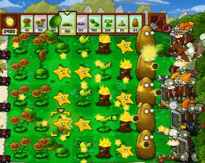

What is a Tower Defense Game?
Tower Defense is a sub-genre of Strategy games, where the goal is to defend a location or prevent enemies from reaching the exit by placing towers. These towers can attack, slow down, or block defenders from moving forward on what are typcially set paths.
Plants Vs. Zombies: The Start of a Revolution
Plants Vs. Zombies is a simple, yet intricate Tower Defense where you place plants to defend your lawn from an oncomming horde of zombies. With 49 plants to choose from and 26 different types of zombies, things get crazy pretty fast.

This was not the first Tower Defense game, but this was the best showing of the genre that we had ever seen. It was simple but had a lot of depth, easy to understand yet hard to master, and fun to play yet fun to look at. Everything that a strategy game should be.